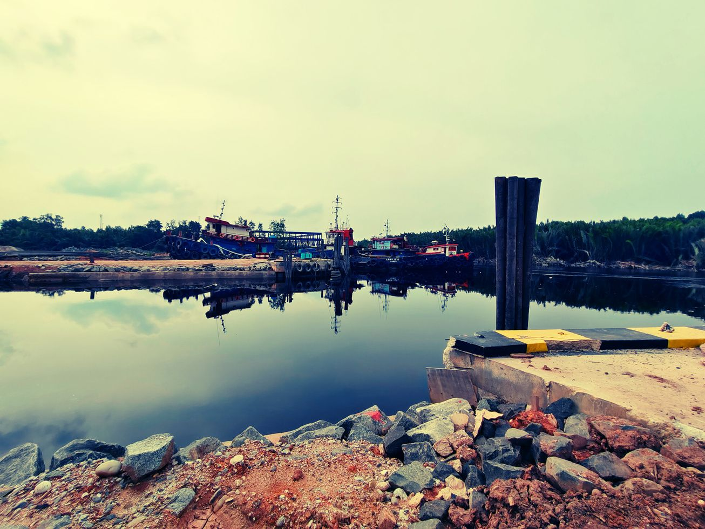

Precision Shipbuilding
Setiap unit yang kami bangun merupakan perpaduan estetika desain naval dan integritas struktural. Dengan metodologi pembangunan berbasis presisi tinggi, kami memastikan setiap kapal siap beroperasi dengan performa optimal dan efisiensi energi maksimal.